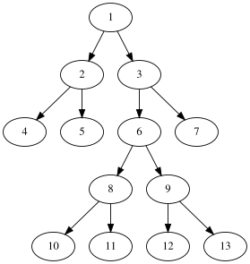
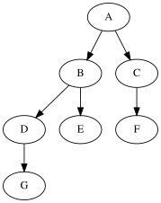

Exercices - Arbres¶
Le cours¶

Quelles sont la taille et la hauteur de cet arbre ?
Dans un parcours infixe, donner l’ordre des noeuds visités.
Données
class Noeud:
""" Une classe pour modéliser les noeuds d'un arbre"""
def __init__(self, v, fg, fd):
self.val = v
self.gauche = fg
self.droit = fd
arb1 = Noeud('1',
Noeud('2', Noeud('4', None, None), Noeud('5', None, None)),
Noeud('3', Noeud('6',
Noeud('8', Noeud('10', None, None), Noeud('11', None, None)),
Noeud('9', Noeud('12', None, None), Noeud('13', None, None))),
Noeud('7', None, None))
)
Applications directes¶
Soit l’arbre de la figure suivante.

En utilisant la classe
Noeudde l’exercice précédent, définir un objetarb2qui pourrait le décrire. Pour éviter les ambiguités: G est le fils droit de D et F est le fils gauche de CQuelle est la hauteur de cet arbre?
Donner les noeuds visités lors d’un parcours postfixe.
Ecrire une fonction récursive
affichequi:affiche un point
.et qui ne renvoie rien pour un arbre vide;affiche une parenthèse ouvrante
(, le sous arbre gauche, le sous arbre droit, la valeur et enfin une parenthèse fermante).
Par exemple pour l’arbre présenté ici, affiche(arb2) fournit:
( ( (. (..G )D ) (..E )B ) ( (..F ).C )A )
Dessiner l’arbre qui fournit
( (. (..C )B )(..D )A )
arb2 = Noeud('A',
Noeud('B',
Noeud('D', None, Noeud('G', None, None)),
Noeud('E', None, None)),
Noeud('C', Noeud('F', None, None), None)
)
def affiche(arb):
""" Affiche un arbre binaire"""
if arb is None:
print('.', end='')
return
else:
print(' (', end='')
affiche(arb.gauche)
affiche(arb.droit)
print(arb.val, end='')
print(' )', end='')
affiche(arb2)
( ( (. (..G )D ) (..E )B ) ( (..F ).C )A )
Un peigne gauche¶
Ecrire une fonction qui prend en paramètre un entier naturel \(h\) et qui renvoie un arbre de hauteur \(h\) où chaque noeud n’a pas de sous arbre droit. Vérifier le résultat avec la fonction affiche de l’exercice précédent.
Indication: deux méthodes sont acceptées: récursive ou itérative.
Méthode récursive
peigne_recursif(h)
un peigne vide a une hauteur nulle;
un peigne de hauteur h est un noeud dont:
la valeur est h;
le sous arbre gauche est un peigne de hauteur h-1;
le sous arbre droit est vide
def peigne(h):
""" Renvoie un peigne gauche de hauteur h;
h: entier naturel
"""
noeud_courant = None
i = h
#i = 0
while i > 0:
noeud_courant = Noeud(i, noeud_courant, None)
i -= 1
return noeud_courant
p = peigne(4)
p
<__main__.Noeud at 0x7f051c089510>
affiche(p)
( ( ( (..4 ).3 ).2 ).1 )
#from math import abs
def peignerec(h, acc=1):
""""""
if h == 0:
return None
else:
return Noeud(acc, peignerec(h-1,acc+1), None)
p2 = peignerec(4)
p2.gauche
<__main__.Noeud at 0x7f051c015210>
affiche(p2)
( ( ( (..4 ).3 ).2 ).1 )